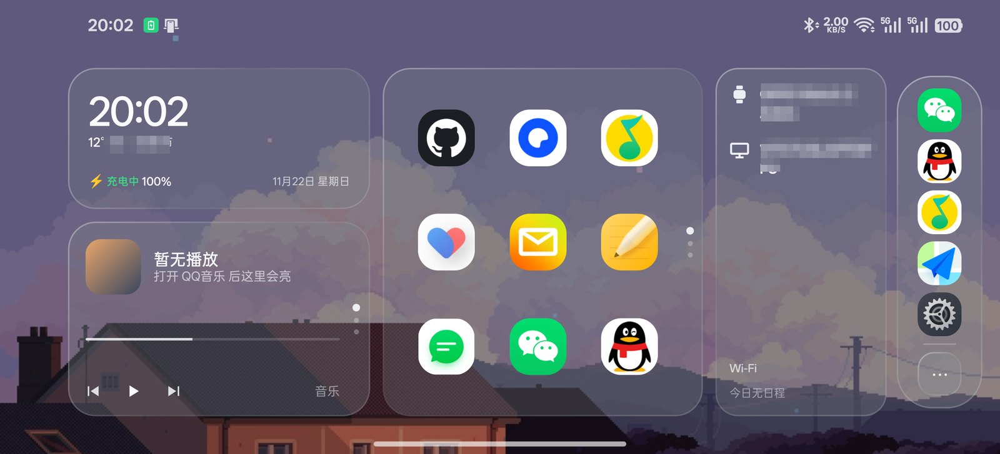
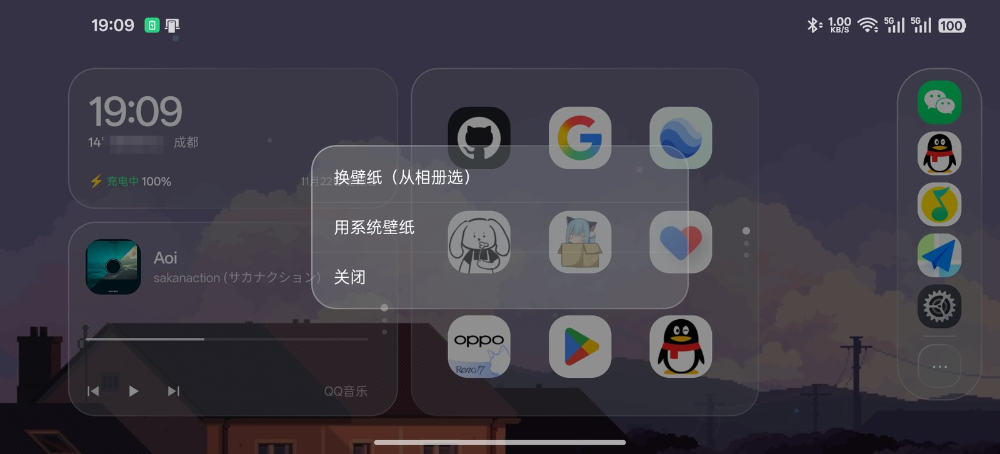
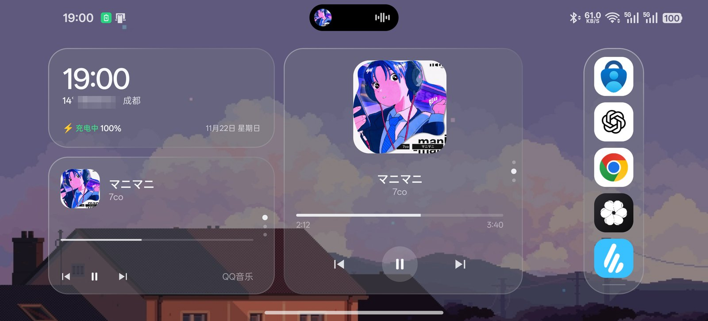
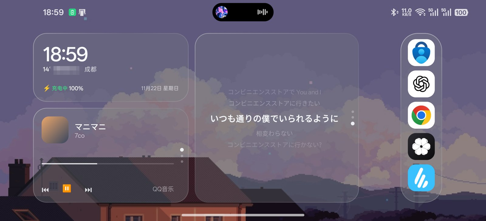

横屏信息面板 · 版本 0.1
Luma 是一个横屏的「信息面板」。把手机横过来放，时间、天气、音乐、日程、通知和常用应用都在一屏里，不用来回切 App。
它不是桌面启动器——不会接管你的桌面，也不会替换 Home 键。按返回键或上滑，就正常回到系统桌面。

主界面：左边信息卡、中间应用矩阵、右边蓝牙竖栏与 Dock
会弹两个授权，都建议给：
| 弹窗 | 给了之后能做什么 | 不给会怎样 |
|---|---|---|
| 定位 | 天气自动显示你所在的城市 | 天气显示「未定位」，需要手动选城市 |
| 日历 | 中间那张卡显示今天的日程 | 卡片显示「还没给日历权限」 |
| 蓝牙 | 右侧竖栏显示已连接的耳机 / 手表 / 电脑 | 竖栏不出现 |
还有一个要手动开：通知使用权。在手机设置里搜「通知使用权」，找到 Luma 打开就行（不同品牌路径不一样，搜最快）。
开了之后：左边通知卡才会有内容，音乐卡才能读到正在播放的歌和封面。
不给也能用，只是对应那块一直空着，不会报错。
上面一张卡是时钟、日期、天气、电量。天气会自己更新，显示实时天气。
充电时这里会出现一个绿色闪电和「充电中 100%」，拔掉线就变成「电量 78%」。
下面一张卡是三张卡片叠在一起，上下滑动切换：音乐、日历、通知。右下角那三个小点表示目前在第几张。
也是上下滑动切换，三页内容：应用九宫格、播放器、歌词。卡片外框不动，只换里面的内容。
最右边那条玻璃是蓝牙和设备状态：上面列着当前连着的耳机、手表、电脑，下面是网络状态和今天的日程摘要。
再右边那一列图标是 Dock：5 个固定应用，加最下面一个 ⋯。
点 Dock 最下面那个 ⋯ → 选「换壁纸（从相册选）」→ 挑一张图。想换回系统原来的壁纸，同一个菜单里选「用系统壁纸」。

点 Dock 底部的 ⋯ 打开设置菜单
长按任意一个图标（九宫格里的、Dock 上的都行），会弹出一个应用列表，点谁就换成谁。选错了点右上角「恢复默认」。
跟换图标一样，长按 Dock 上的图标就行。
通知卡上，从右往左滑那条通知，就清掉了——系统通知栏里那条也会一起消失。
中间滑到播放器那页，或者用左边音乐卡上的按钮。上一首、播放暂停、下一首都能点。QQ 音乐、网易云、酷狗、Spotify、Apple Music 都支持——哪个在放就控制哪个。

播放器大卡：封面、歌名、进度、控制按钮
| 想做的事 | 怎么做 |
|---|---|
| 切换左边卡片（音乐 / 日历 / 通知） | 在左边卡片上上下滑 |
| 切换中间内容（应用 / 播放器 / 歌词） | 在中间卡片上上下滑 |
| 打开一个应用 | 点图标 |
| 换某个位置的图标 | 长按那个图标 |
| 清掉一条通知 | 在通知上右滑 |
| 换壁纸 | 点 Dock 的 ⋯ |
| 回到系统桌面 | 按返回键或上滑 |

歌词页：当前这句会变大加粗，跟着音乐走